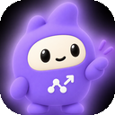

Usa la sesión de Nova y de LinkedIn de este Chrome. No se pide ninguna contraseña.
Nova podrá enviar invitaciones, visitas y mensajes que tú programes (con topes), y leer aceptaciones y respuestas. Nunca recibe tu contraseña.
Todo lo que esta cuenta va a hacer, en orden, con la hora estimada (cambia un poco a propósito) y su campaña.
Aquí queda todo lo que falló (también se guarda en Nova). Si algo no anda, pulsa «Copiar informe» y pégamelo: así sé exactamente qué pasó.
✓ Informe copiado
Respeta los topes y el horario de la campaña. Se detiene sola si LinkedIn muestra un aviso (Nova pausa la cuenta 48 h). Al activar, la primera acción sale a los 3–9 min, no al instante.